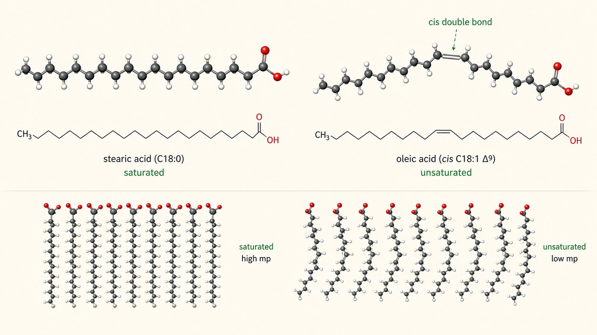
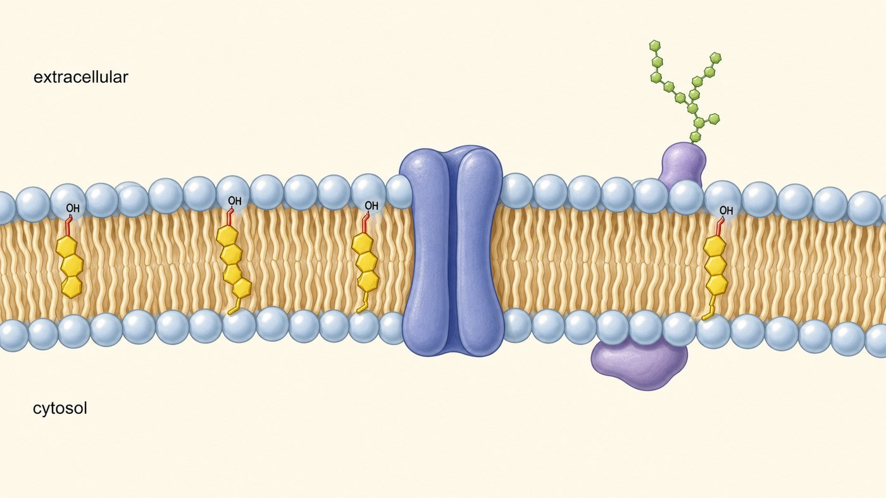
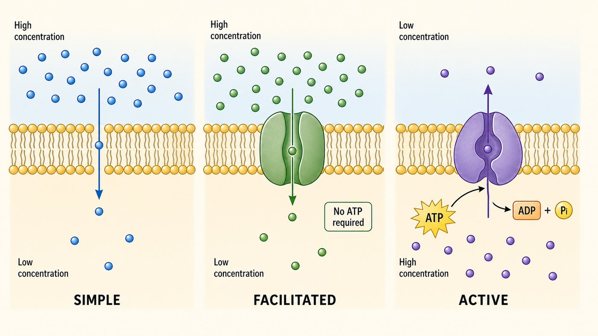

第 10 週
Lipid và màng sinh học
Hiệu ứng kỵ nước, lần thứ 4
水:油被擠出去。
Tuần 2: nước đẩy dầu
蛋白質:疏水核心。
Tuần 4: lõi kỵ nước
細胞膜。
Tuần này: màng
疏水效應把水油分開(第 2 週)。
醣蛋白與肝醣構造(第 8 週)。
Kiến thức cũ dùng hôm nay
Từ vựng · 不用背,看過就好
| 中文 | Tiếng Việt | English | 中文 | Tiếng Việt | English |
|---|---|---|---|---|---|
| 脂肪酸 | Acid béo | Fatty acid | 兩親性 | Lưỡng cực | Amphipathic |
| 飽和 | (béo) no | Saturated | 被動運輸 | VC thụ động | Passive |
| 不飽和 | (béo) không no | Unsaturated | 主動運輸 | VC chủ động | Active |
| 磷脂 | Phospholipid | Phospholipid | 鈉鉀幫浦 | Bơm Na+/K+ | Na/K pump |
| 脂雙層 | Lớp lipid kép | Lipid bilayer | 膽固醇 | Cholesterol | Cholesterol |
飽和 = no,不飽和 = không no。加不加「không」而已。
No và không no

飽和:直的:排得緊,難融。固體(豬油)。 | 不飽和:彎的:排不緊,好融。液體(油)。
Cái gấp khúc quyết định
橄欖油是液體,豬油是固體。差別就在那個彎。
Phospholipid
碰水。
Đầu ưa nước
躲水。兩條。
Đuôi kỵ nước (2 đuôi)
Lớp lipid kép

黃色 = 膽固醇 Cholesterol | 藍色 = 通道蛋白 Kênh | 紫色 = 醣蛋白 Glycoprotein
疏水尾一定朝內。又是疏水效應。 Đuôi kỵ nước quay vào trong.
Mô hình khảm lỏng
磷脂會移動,不是死的。
Màng linh động
浮在膜上,可以移動。
Protein như thuyền nổi
Qua màng thế nào?

被動運輸:順梯度。不耗能。溜滑梯。 | 主動運輸:逆梯度。要 ATP。爬樓梯。
Chủ động: ngược + ATP
| 被動 Thụ động | 主動 Chủ động | |
|---|---|---|
| 方向 | 順梯度(高→低) | 逆梯度(低→高) |
| 耗能 | 不用 | 要 ATP |
| 例子 | 氧氣、水 | 鈉鉀幫浦 |
看到「逆梯度」或「ATP」→ 就是主動運輸。
Bơm Na+/K+
你的腦很多能量花在這。
Não dùng nhiều ATP cho việc này
神經傳訊靠這個梯度。
Truyền tín hiệu thần kinh
第 15 週:氧化磷酸化。也靠「膜兩邊的梯度」發電。同一個原理。
Bài tập: Đúng hay sai
主動運輸需要 ATP。
不飽和脂肪酸在室溫是固體。
磷脂的疏水尾朝向膜的外側。
鈉鉀幫浦是被動運輸。
想一想:膜要用「兩親性」分子。為什麼不用全親水或全疏水?
下週 · Tuần sau
Nucleotide và nucleic acid
▶ 課前:看詞彙表第 11 週(20 個詞)
Xem trước 20 từ của tuần 11
▶ 小測:下週前 10 分鐘,考今天的詞
Kiểm tra 5 câu
▶ 提示:第 11 週的 base 是「鹼基」,不是「鹼」
base = 鹼基 (không phải 鹼)